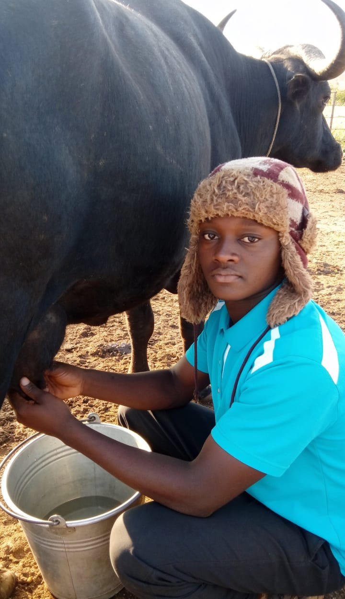

01
IT support & troubleshooting
Building the patience and practical know-how to diagnose everyday hardware, software, and system issues.
Second-year IT student · Kenya
I’m an Information Technology student at Kirinyaga University, working toward a future in IT support, network engineering, software development, and automation.

01 / ABOUT ME
I’m a second-year IT student at Kirinyaga University with a growing interest in how technology works behind the scenes.
I’m developing a strong foundation in troubleshooting, computer systems, and networking while learning about software development and automation. My goal is to keep gaining practical experience and grow into a capable IT professional, technician, and developer.
02 / AREAS OF INTEREST
A few of the fields I’m exploring as I grow my IT skills.
Building the patience and practical know-how to diagnose everyday hardware, software, and system issues.
Learning how devices communicate, how networks are designed, and what it takes to keep connections reliable.
Learning how to build useful software and automate repetitive tasks, while staying open to other areas of IT.
03 / THE JOURNEY
I’m building my knowledge one step at a time, with a focus on practice, curiosity, and professional growth.
NOW
Studying IT and developing core knowledge across computing and technology.
NEXT
Growing my troubleshooting, networking, and coding experience through labs and projects.
AIM
Working toward a career in IT support, network engineering, and software development, with automation as another area to explore.
04 / GET IN TOUCH
Interested in technology, learning opportunities, or sharing ideas? I’d be glad to connect.
Have an opportunity or a good idea to share?
Send me an email Update this email link with your own address before publishing.